如何用XCode编译WebDriverAgent.xcodeproj
对于下载到WebDriverAgent的源码中的WebDriverAgent.xcodeproj，第一次编译最好去用XCode编译。
因为往往涉及到配置Team和自动签名等事宜。
下面就来介绍，如何用XCode去配置和编译WebDriverAgent.xcodeproj
双击WebDriverAgent.xcodeproj
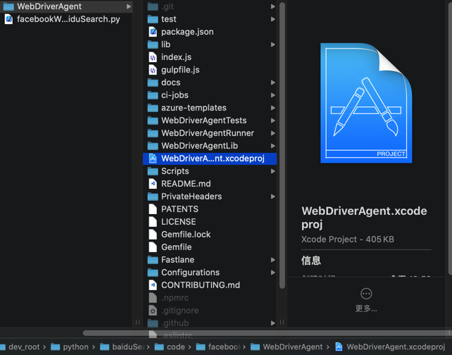
会自动用XCode打开：
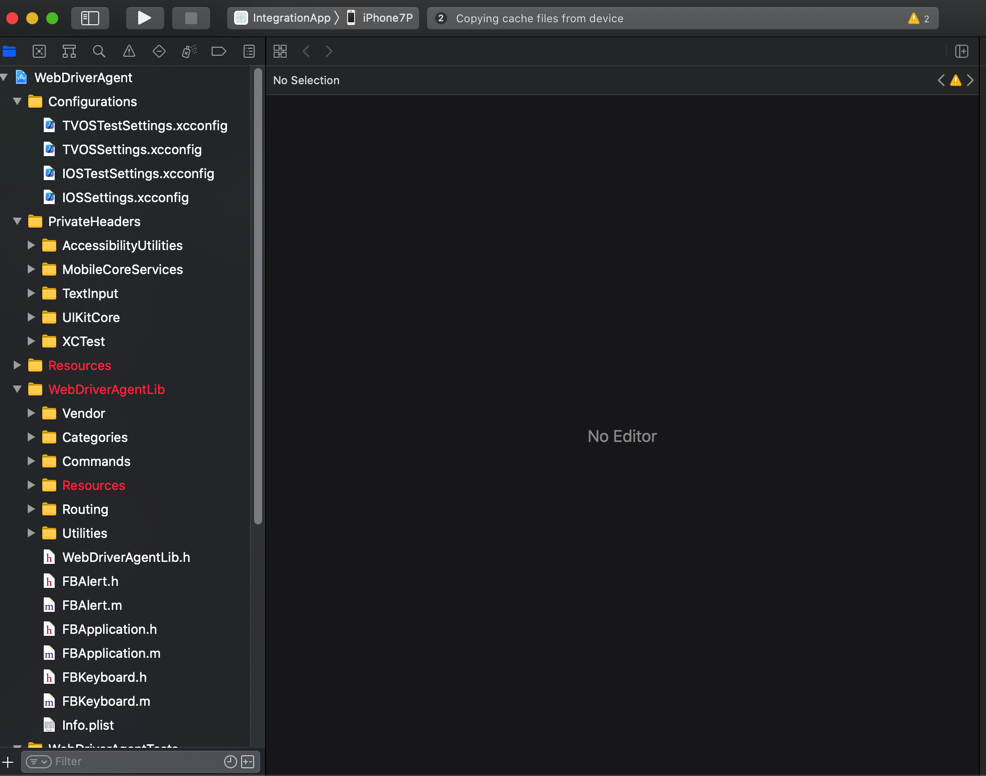
点击左上角的项目，进入项目属性，点击TARGETS中的WebDriverAgentRunner，切换到Signing & Capabilities：
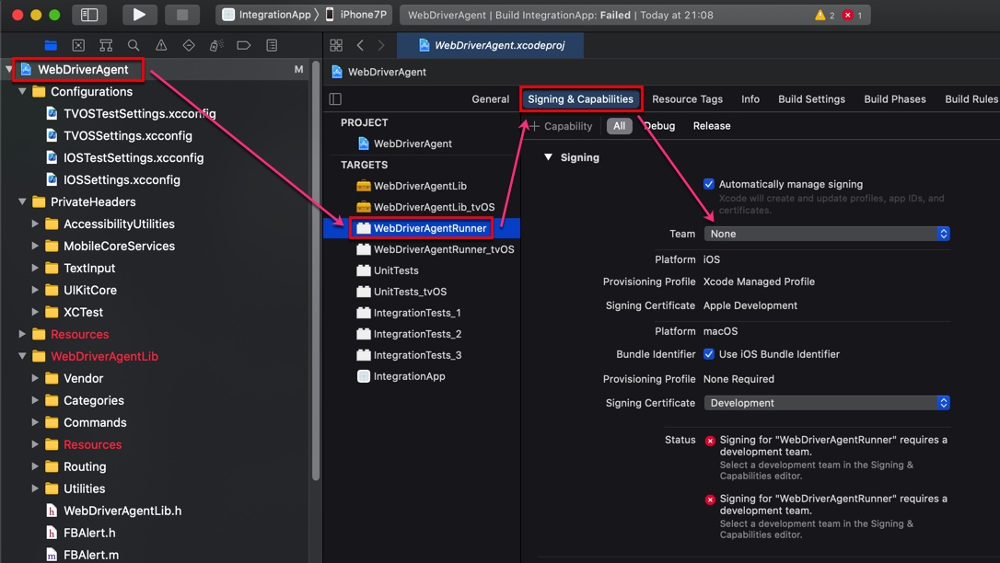
默认Team是None，需要去选择一个自己的苹果账号：
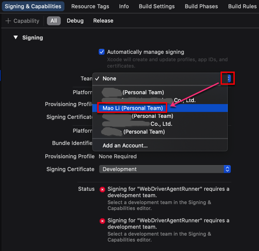
然后会触发自动修复，显示Waiting to repair：
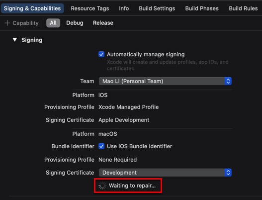
看到没有其他警告或错误，就表示自动创建签名和Profile等工作正常了：
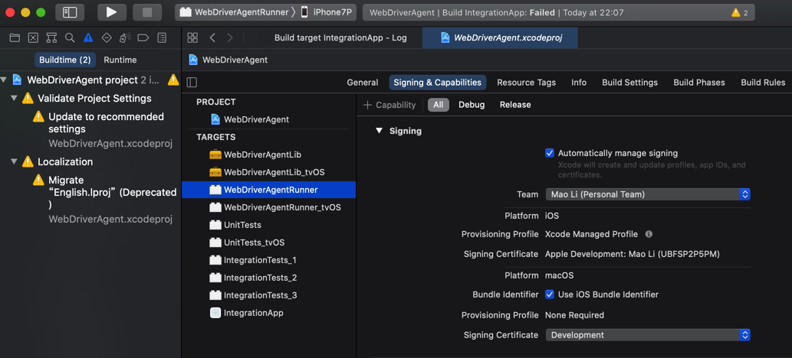
接着即可去编译了：点击左上角▶️按钮，即可触发编译，显示Building ...
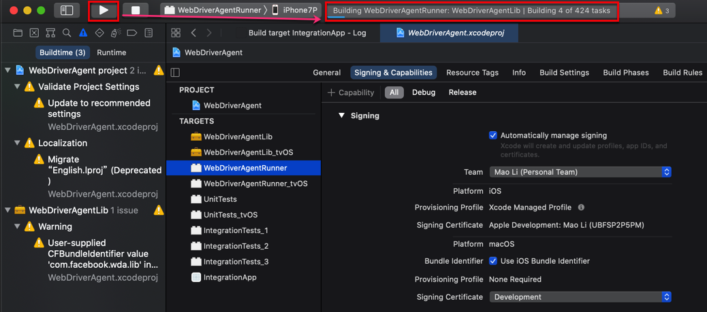
之后即可正常的Product->Test去测试，启动服务，供后续使用了。
Failed to register bundle identifier
如果Signing & Capablities的自动修复后报错：
Failed to register bundle identifier
The app identifier "com.facebook.WebDriverAgentRunner" cannot be registered to your development team because it is not available. Change your bundle identifier to a unique string to try again.

原因：（很可能是）默认的ID：com.facebook.WebDriverAgentRunner已存在，重复了，导致无法继续。
解决办法：修改为其他（独一无二的）值
操作步骤：
WebDriverAgentRunner的属性 -> Build Settings -> Packaging -> Product Bundle Identifier
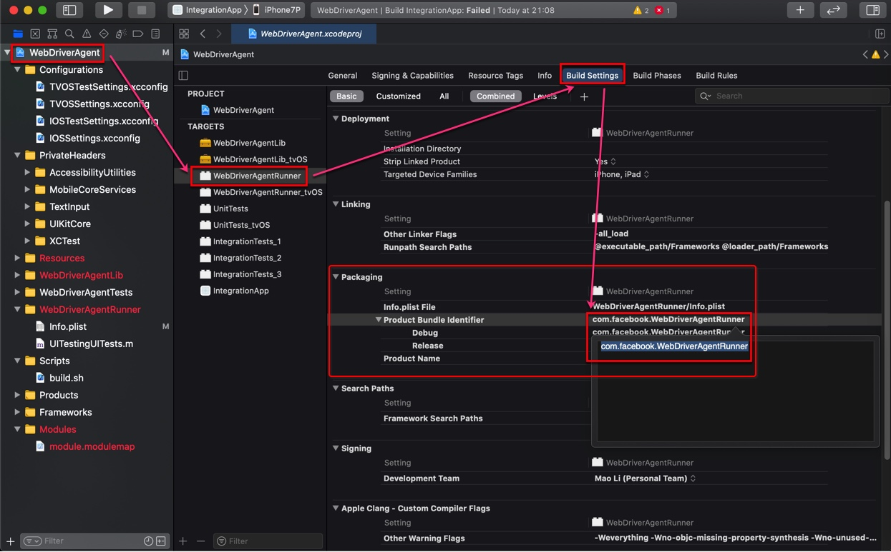
把值从默认的：com.facebook.WebDriverAgentRunner改为别的，确保不重复的值，比如我此处改为：com.facebook.WebDriverAgentRunnerCrifan
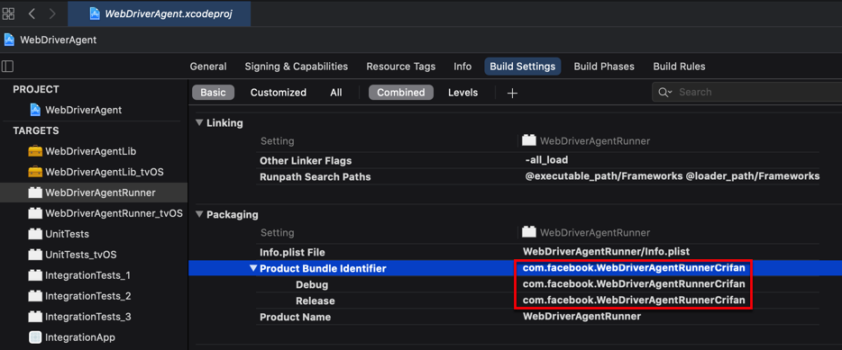
别处调用到此处的Product Bundle Identifier
后来注意到一个细节，别处会调用到此处的Product Bundle Identifier中的值
比如：Info->Key->Bundle Identifier: $(PRODUCT_BUNDLE_IDENTIFIER)
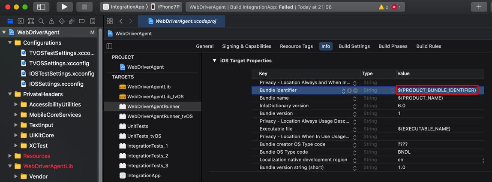
XCode报错：A build only device cannot be used to run this target
现象：编译期间报错
A build only device cannot be used to run this target.
No supported iOS devices are available. Connect a device to run your application or choose a simulated device as the destination.
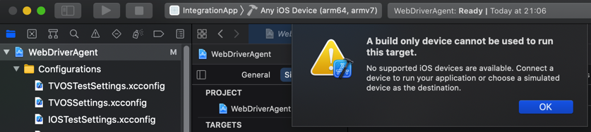
原因：XCode中没有选择正确的目标设备
解决办法：插入iPhone，且选择对应的iPhone等iOS真机设备。
具体步骤：把此处的iPhone7P插入Mac
然后XCode中选择对应的目标设备，为iPhone7P
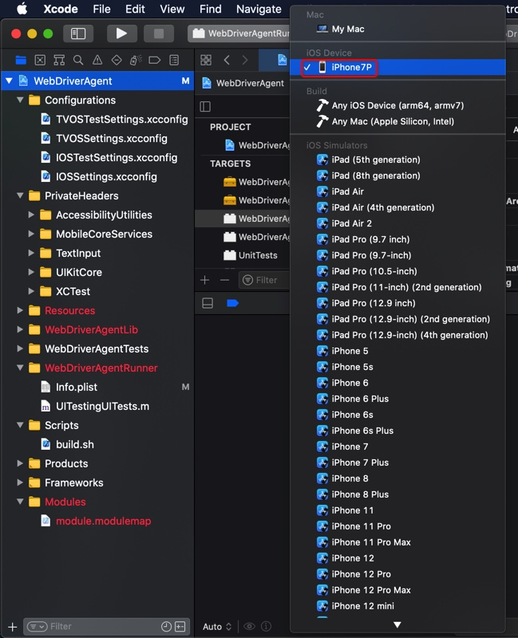
注：可以借助于idevice_id去列出当前已连接的iOS设备的ID：
idevice_id -l
3dc13714e21415898e8e2c2863d96990a4d69c97
说明iOS设备的确已连接
XCode报错：Signing for requires a development team. Select a development team in the Signing & Capabilities editor
XCode去编译项目，报错：
Signing for "IntegrationApp" requires a development team. Select a development team in the Signing & Capabilities editor.
Showing All Messages
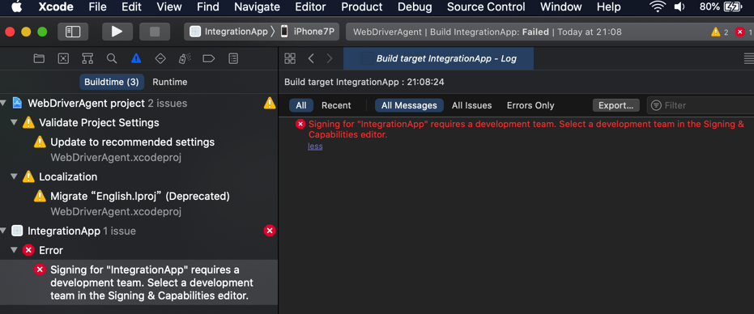
出错原因：把本身要编译的app搞错了，不是这个IntegrationApp，应该是WebDriverAgentRunner
解决办法：把要编译的app换成WebDriverAgentRunner
具体步骤：
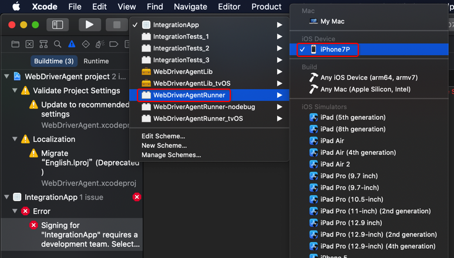
即可。
另外，需要去给WebDriverAgentRunner加上code signing
-》 此处是通过把Team从None改为自己的值，然后自动修复
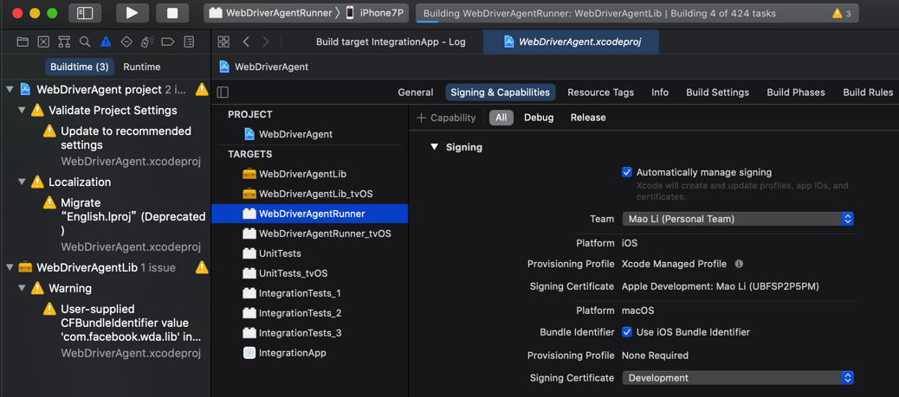
一般即可修复成功，最终加上code signing。
XCode报错：Failed to register bundle identifier com.facebook.WebDriverAgentRunner
XCode中尝试编译WebDriverAgentRunner，当选择了Team后，自动Singing，结果报错：
Failed to register bundle identifier
The app identifier "com.facebook.WebDriverAgentRunner" cannot be registered to your development team because it is not available. Change your bundle identifier to a unique string to try again.
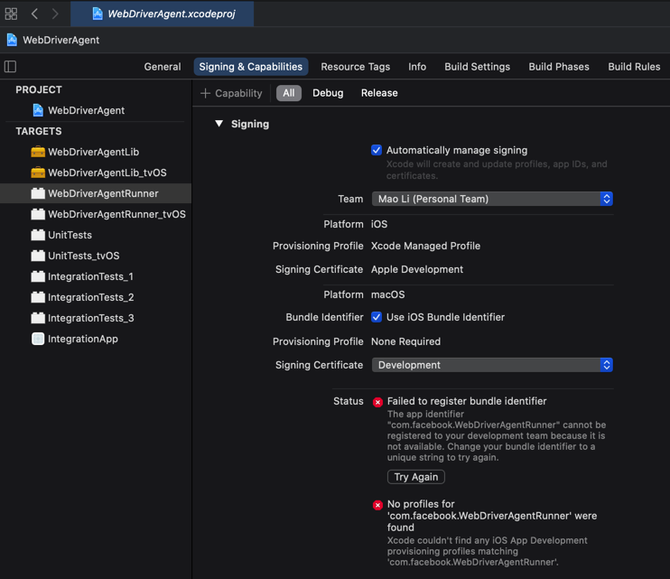
原因：估计是id重复了
解决办法：去更换id
具体步骤：
把com.facebook.WebDriverAgentRunner为别的值，比如：com.facebook.WebDriverAgentRunner_Crifan
最终是，对于WebDriverAgentRunner的bundle Identifier值，最后是在：
WebDriverAgentRunner的属性-》Build Settings-》Packaging-》Product Bundle Identifier 中去修改的
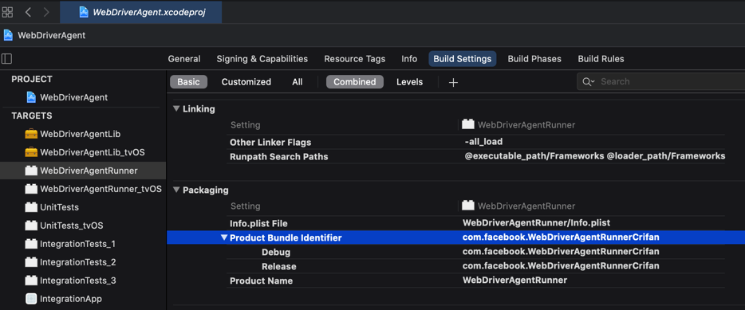
xcodebuild报错：Signing certificate is invalid
xcodebuild编译报错：
xcodebuild -project WebDriverAgent.xcodeproj -scheme WebDriverAgentRunner -destination "id=`idevice_id -l | head -n1`" test
Command line invocation:
/Applications/Xcode.app/Contents/Developer/usr/bin/xcodebuild -project WebDriverAgent.xcodeproj -scheme WebDriverAgentRunner -destination id=3dc13714e21415898e8e2c2863d96990a4d69c97 test
note: Using new build system
note: Building targets in parallel
note: Planning build
note: Constructing build description
error: Signing certificate is invalid. Signing certificate "Apple Development: Mao Li (UBFSP2P5PM)", serial number "<DVTSigningCertificateSerialNumber: 0x7fc4c756db00>", is not valid for code signing. It may have been revoked or expired. (in target 'WebDriverAgentLib' from project 'WebDriverAgent')
error: Signing certificate is invalid. Signing certificate "Apple Development: Mao Li (UBFSP2P5PM)", serial number "<DVTSigningCertificateSerialNumber: 0x7fc4c756db00>", is not valid for code signing. It may have been revoked or expired. (in target 'WebDriverAgentRunner' from project 'WebDriverAgent')
Test session results, code coverage, and logs:
/Users/crifan/Library/Developer/Xcode/DerivedData/WebDriverAgent-fkggltbnspxitwcqkcogpefhhvai/Logs/Test/Test-WebDriverAgentRunner-2021.04.13_21-02-33-+0800.xcresult
Testing failed:
Signing certificate is invalid. Signing certificate "Apple Development: Mao Li (UBFSP2P5PM)", serial number "<DVTSigningCertificateSerialNumber: 0x7fc4c756db00>", is not valid for code signing. It may have been revoked or expired.
Testing cancelled because the build failed.
** TEST FAILED **

原因：自己的Apple苹果（开发者）账号过期了。不可用，没法给代码code sign了。
解决办法：花钱，给苹果开发者账号续费。价格：99美元/年。
XCode报错：The certificate used to sign has either expired or has been revoked
其他类似的问题：
XCode中，报错
Unable to install "WebDriverAgentRunner-Runner"
The certificate used to sign "WebDriverAgentRunner-Runner" has either expired or has been revoked. An updated certificate is required to sign and install the application.
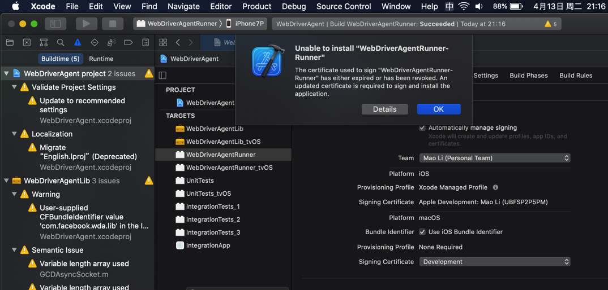
点击Details还可以看到详情：
Details
Unable to install "WebDriverAgentRunner-Runner"
Domain: com.apple.dt.MobileDeviceErrorDomain
Code: -402620392
Recovery Suggestion: The certificate used to sign "WebDriverAgentRunner-Runner" has either expired or has been revoked. An updated certificate is required to sign and install the application.
--
The identity used to sign the executable is no longer valid.
Domain: com.apple.dt.MobileDeviceErrorDomain
Code: -402620392
User Info: {
DVTRadarComponentKey = 487925;
MobileDeviceErrorCode = "(0xE8008018)";
"com.apple.dtdevicekit.stacktrace" = (
0 DTDeviceKitBase 0x000000011d4bcc8f DTDKCreateNSErrorFromAMDErrorCode + 220
1 DTDeviceKitBase 0x000000011d4fb241 __90-[DTDKMobileDeviceToken installApplicationBundleAtPath:withOptions:andError:withCallback:]_block_invoke + 155
2 DVTFoundation 0x0000000101ba464b DVTInvokeWithStrongOwnership + 71
3 DTDeviceKitBase 0x000000011d4faf82 -[DTDKMobileDeviceToken installApplicationBundleAtPath:withOptions:andError:withCallback:] + 1440
4 IDEiOSSupportCore 0x000000011d36ba10 __118-[DVTiOSDevice(DVTiPhoneApplicationInstallation) processAppInstallSet:appUninstallSet:installOptions:completionBlock:]_block_invoke.292 + 3513
5 DVTFoundation 0x0000000101cd317e __DVT_CALLING_CLIENT_BLOCK__ + 7
6 DVTFoundation 0x0000000101cd4da0 __DVTDispatchAsync_block_invoke + 1191
7 libdispatch.dylib 0x00007fff6db306c4 _dispatch_call_block_and_release + 12
8 libdispatch.dylib 0x00007fff6db31658 _dispatch_client_callout + 8
9 libdispatch.dylib 0x00007fff6db36c44 _dispatch_lane_serial_drain + 597
10 libdispatch.dylib 0x00007fff6db375d6 _dispatch_lane_invoke + 363
11 libdispatch.dylib 0x00007fff6db40c09 _dispatch_workloop_worker_thread + 596
12 libsystem_pthread.dylib 0x00007fff6dd8ba3d _pthread_wqthread + 290
13 libsystem_pthread.dylib 0x00007fff6dd8ab77 start_wqthread + 15
);
}
--
System Information
macOS Version 10.15.7 (Build 19H2)
Xcode 12.4 (17801) (Build 12D4e)
Timestamp: 2021-04-13T21:17:10+08:00
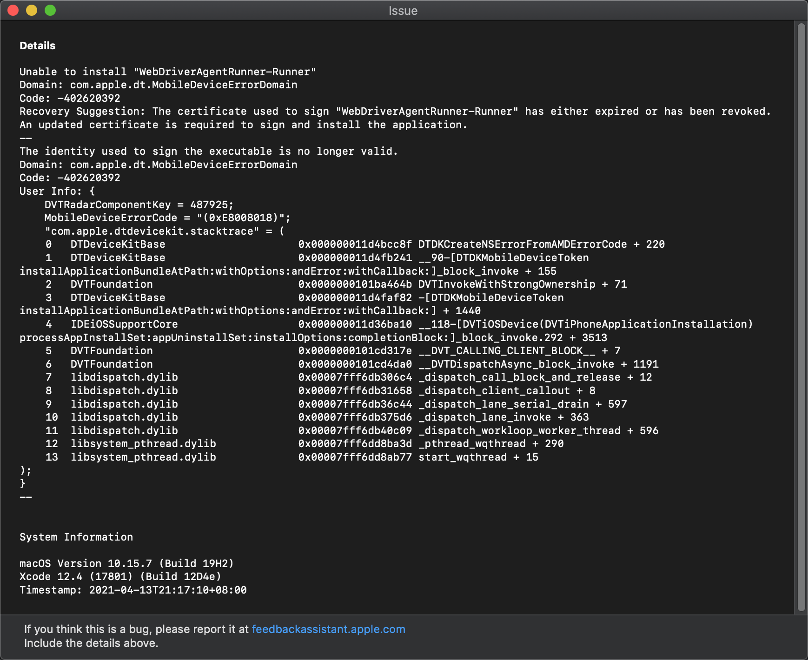
原因：苹果开发者账号过期了，没续费。导致证书不可用。
解决办法：同上，续费即可。
xcodebuild报错：xcode-select error tool xcodebuild requires Xcode
如果运行xcodebuld报错：
xcode-select: error: tool 'xcodebuild' requires Xcode, but active developer directory '/Library/Developer/CommandLineTools' is a command line tools instance
- 原因：没有安装XCode 或 虽然已安装XCode，但是没启用XCode的命令行
- 解决办法：去安装并开启XCode的命令行
- 步骤：
- 文字
Xcode->设置->Locations->Command Line Tools，默认是空，下拉选择Xcode 11.3.1(11C504)
- 截图
- 文字

安装后，即可查看版本信息：
~ xcodebuild -version
Xcode 11.3.1
Build version 11C504
xcodebuild报错：xcodebuild error missing value for key
如果没有iOS设备（如iPhone）插入到Mac中，则运行：
xcodebuild -project WebDriverAgent.xcodeproj -scheme WebDriverAgentRunner -destination "id=`idevice_id -l | head -n1`" test
会报错：
~/dev/xxx/crawler/appAutoCrawler/AppCrawler/iOSAutomation/refer/WebDriverAgent master ● xcodebuild -project WebDriverAgent.xcodeproj -scheme WebDriverAgentRunner -destination "id=`idevice_id -l | head -n1`" test
xcodebuild: error: missing value for key 'id' of option 'Destination'